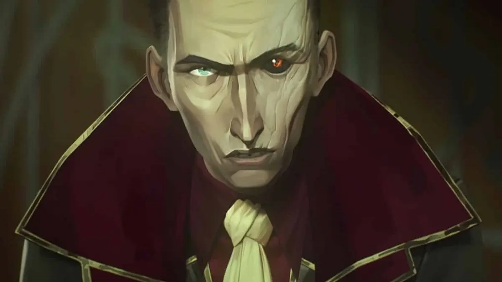

Née sous le nom de Powder, Jinx est une criminelle excentrique de Zaun, spécialisée dans la fabrication d'armes explosives. Son passé tragique et sa séparation avec sa sœur Vi ont façonné sa personnalité instable et son penchant pour le chaos.

Ancienne délinquante de Piltover, Vi est une combattante farouche et protectrice. Forte, déterminée et dotée de gants mécaniques puissants, elle est prête à tout pour défendre ceux qu’elle aime, même si cela signifie défier l’ordre établi. Son passé complexe avec sa sœur Jinx façonne sa quête pour la justice.
Inventeur brillant de Piltover, Jayce est le créateur de la technologie Hextech. Son ambition est de protéger sa ville en démocratisant l'accès à cette énergie, tout en luttant contre les menaces qui pèsent sur Piltover.
Scientifique de Zaun, Viktor est un visionnaire qui cherche à améliorer l'humanité grâce à la technologie. Son engagement envers l'innovation le pousse à des choix moraux complexes, notamment en ce qui concerne l'utilisation de la magie et de la science.

Ambassadrice influente de Piltover, Mel Medarda est une stratège politique habile, issue d'une famille noble. Elle utilise son pouvoir et son intelligence pour manipuler les événements en sa faveur, tout en poursuivant ses propres objectifs.

Professeur émérite et scientifique de Piltover, Heimerdinger est un yordle passionné par l'innovation. Bien qu'il soit un défenseur de la science, il est également conscient des dangers potentiels de certaines technologies.
Détective de Piltover, Caitlyn Kiramman est reconnue pour son intelligence et son intégrité. Elle est déterminée à résoudre les mystères qui entourent les événements de la ville, souvent en collaboration avec Vi.
Membres influents du conseil de Piltover, les conseillers jouent un rôle crucial dans la gouvernance de la ville. Chacun poursuit ses propres intérêts, ce qui crée un environnement politique complexe et souvent conflictuel.
Force de maintien de l'ordre de Piltover, les Pacifieurs sont chargés de faire respecter la loi. Leur présence est souvent perçue comme oppressive par les habitants de Zaun, exacerbant les tensions entre les deux villes.
Ancien chef de Zaun, Vander est un homme sage et respecté, qui a choisi de vivre en paix après une vie de violence. Il est le père adoptif de Vi et Jinx et cherche à protéger sa famille et sa communauté.
Leader charismatique de Zaun, Silco est un homme ambitieux qui rêve d'indépendance pour sa ville. Il est prêt à tout pour atteindre ses objectifs, y compris manipuler et trahir ceux qui l'entourent.
Bras droit de Silco, Sevika est une femme de main redoutable, connue pour sa loyauté et sa brutalité. Elle est prête à tout pour servir les intérêts de Silco et maintenir l'ordre à Zaun.
Jeune prodige de Zaun, Ekko est un inventeur brillant capable de manipuler le temps grâce à sa montre spéciale. Il est le leader des Firelights, un groupe de jeunes rebelles qui luttent contre l'injustice à Zaun.
Isha est une jeune orpheline muette de Zaun, recueillie par Jinx, qu’elle considère comme une figure maternelle. Elle développe une relation fraternelle avec elle et imite son apparence. Isha joue un rôle important en protégeant Jinx, jusqu’à se sacrifier pour elle.
Substance chimique développée à Zaun, le Shimmer est utilisé pour améliorer temporairement les capacités physiques des individus. Cependant, son utilisation prolongée entraîne des effets secondaires graves, notamment des mutations et une perte de contrôle.
Technologie avancée de Piltover, l'Hextech permet de canaliser et de manipuler l'énergie magique à travers des cristaux. Cette innovation a révolutionné la ville, offrant de nouvelles possibilités en matière d'énergie, de transport et de communication.
Découvrez la bande-son complète de la saison 2 d'Arcane ! Cliquez sur chaque titre pour écouter la musique.